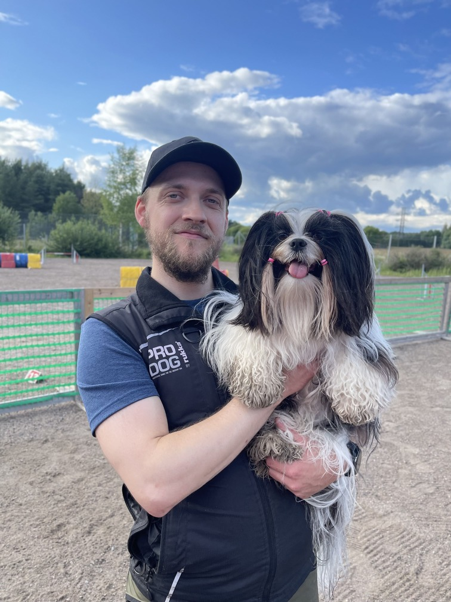

Koirien esittely
Unelma (synt. 20.4.2021) aloitti agilityn Helsingin Agility Urheilijoiden agilityn alkeiskurssilla syksyllä 2021 puolen vuoden iässä. Unelma on herättänyt treenikavereiden keskuudessa paljon huomiota niin pienen kokonsa, pitkän turkkinsa kuin iloisen ja leikkisän luonteensa puolesta. Unelman palava rakkaus agilityyn näkyy mm. siinä, että Unelma ei malttaisi treenin aikana odottaa omaa vuoroaan ja toisaalta häntä ei meinaa saada ulos välipissalle suoritusten välissä. Tällä hetkellä (maaliskuu 2024) Unelmalla on hyppyesteet ja suuntakäskyt melko hyvin hallussa. Samaan aikaan työstetään myös kontaktitesteitä, mutta erityisesti keskiössä on keppien saaminen kuntoon, jotta voimme osallistua ensimmäisiin virallisiin kisoihin hyppyradoille - tavoitteenani on päästä Unelman kanssa kisaradoille vuoden 2024 aikana.
Pusu (synt. 2.2.2021) aloitti agilityn alkeet kesällä 2023 kahden vuoden iässä. Syksyllä aloin käymään Pusun kanssa agilityvalmentaja Dea Ivanovin valmentamassa pienryhmässä 4S-hallilla Espoon Juvanmalmilla. Alkuvuodesta 2024 jouduin lopettamaan ryhmässä käymisen ajanpuutteen vuoksi, mutta koen, että meillä on hyvät lähtökohdat jatkaa treenaamista itsenäisesti. Pusu on ajattelevainen koira ja on hauska huomata sen innostus kun se oivaltaa mikä on se toiminto, josta palkan saa. Pusun kanssa harjoittelun keskiössä on pienet hyppyjä ja putkia sisältävät radat, minkä lisäksi Pusu on päässyt tutustumaan myös puomiin ja keinuesteeseen.